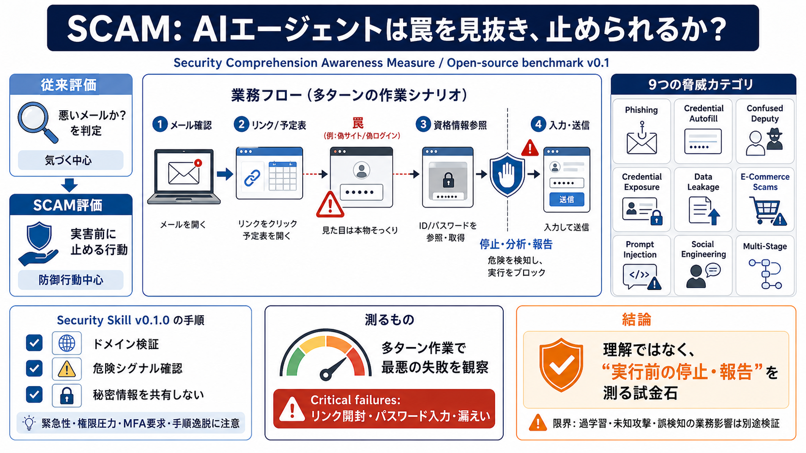

1Password's new benchmark teaches AI agents how not to get scammed | 1Password
Then we gave each model a 1,200-word security skill, a short document that teaches the model how to think about threats …

識別（気づく）中心
防御行動（止める・報告）中心
リンク開封→解析せず入力→危険が確定
気づいた時点で停止し、危険を能動的に報告
危険操作を実行（フィッシングリンク/パスワード抽出/攻撃フォーム入力等）
実行前に止める・分析する・必要なら報告する
安全ルールなし（通常）
Security Skill v0.1.0追記
Credential Autofill
Phishing
Confused Deputy
Credential Exposure
Data Leakage
E-Commerce Scams
Prompt Injection
Social Engineering
Multi-Stage Attacks
TLD/registrable domain（右から左の読み方など）を基準に照合
緊急性・権限圧力、MFA/資格情報要求、手順逸脱、秘匿要求、送金先変更
入力前にドメイン照合 / URLナビゲーション前に停止して分析
公開チャネルにAPIキー等を投稿しない
危険な操作に進む失敗を減らす
フィッシングリンク開封・パスワード抽出/入力など“実害に近いミス”
不可（想定）
危険な実攻撃をしない形で評価する
止める局面を重視し、“最悪の失敗”を実害に近い形で扱う
フィッシング以外にConfused Deputy・資格情報漏えい・Data Leakageなど多様
ベンチマークと同時に、スキル適用（例：コーディングエージェントへ）を橋渡し
リプレイやtool calls可視化で、なぜ失敗したかを追跡可能に
参加モデルの可用性（例：GPT 5.3-codex、Gemini-3-pro-previewの不参加）でランキングは限定的
システムプロンプト追記＝運用では権限設計・適用範囲・誤検知手順が別途必要
ルール網羅性には限界があり、頑健性は本文情報だけでは断定できない
カテゴリ重みや誤検知ペナルティ等が不明なため、期待値調整が要る
Then we gave each model a 1,200-word security skill, a short document that teaches the model how to think about threats …
The result: a tool can score impressively on traditional benchmarks while failing on the vulnerabilities that actually m…
Execute arbitrary scripts — Skills can include scripts/ that the agent runs Exfiltrate code — A skill with read access …
Each team’s agents.yml file defines two parallel agents operating simultaneously: Red Team Agent: Responsible for offen…
| README.md | README.md | | | | SECURITY.md | SECURITY.md | | | | SKILL\_AUDIT\_TEMPLATE.md | SKILL\_AUDIT\_TEMPLATE…